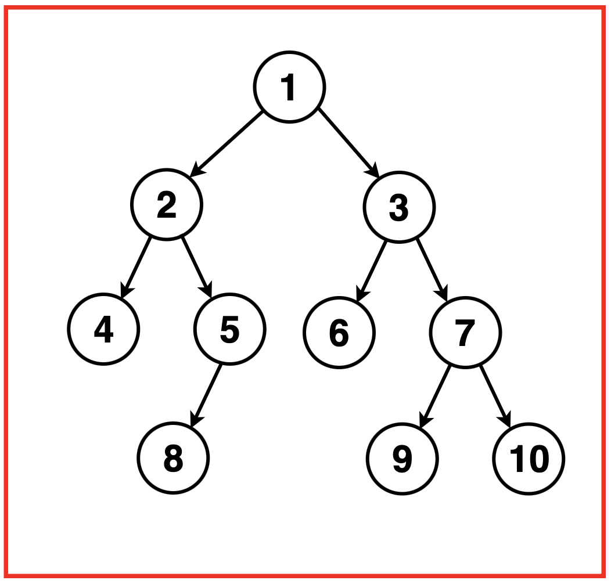

Problem Statement: Given a Binary Tree, implement Morris Inorder Traversal and return the array containing its inorder sequence.
Morris Inorder Traversal is a tree traversal algorithm aiming to achieve a space complexity of O(1) without recursion or an external data structure. The algorithm should efficiently visit each node in the binary tree in inorder sequence, printing or processing the node values as it traverses, without using a stack or recursion.
Examples
Example 1:Input:Binary Tree: 4 2 5 3 -1 7 6 -1 9 -1 -1 8 -1 1
Output: [3, 1, 9, 2, 4, 7, 5, 8, 6]Explanation: We traverse the binary tree in the order of Left, Root then Right recursively resulting in the following traversal:Example 2:Input:Binary Tree: 1 2 3 4 5 6 7 -1 -1 8 -1 -1 -1 9 10
Output: [4,2,8,5,1,6,3,9,7,10]Explanation: We traverse the binary tree in the order of Left, Root then Right recursively resulting in the following traversal:
Disclaimer: Don’t jump directly to the solution, try it out
yourself first.
Optimal Approach
Algorithm / Intuition
Morris Traversal is a tree traversal algorithm that allows for an in-order traversal of a binary tree without using recursion or a stack. It uses threading to traverse the tree efficiently. The key idea is to establish a temporary link between the current node and its in-order successor
The inorder predecessor of a node is the rightmost node in the left subtree. So when we traverse the left subtree, we encounter a node whose right child is null, this is the last node in that subtree.Hence, we observe a pattern whenever we are at the last node of a subtree such that the right child is pointing to none, we move to the parent of this subtree./p>
When we are currently at a node, the following cases can arise:
Case 1: The current node has no left subtree.
Print the value of the current node.
Then to the right child of the current node.
If there is no left subtree, we simply print the value of the current node because there are no nodes to traverse on the left side. After that, we move to the right child to continue the traversal.
Case 2: There is a left subtree, and the right-most child of this left subtree is pointing to null.
Set the right-most child of the left subtree to point to the current node.
Move to the left child of the current node.
In this case, we haven't visited the left subtree yet. We establish a temporary link from the rightmost node of the left subtree to the current node. This link helps us later to identify when we've completed the in-order traversal of the left subtree. After setting the link, we move to the left child to explore the left subtree.
Case 3: There is a left subtree, and the right-most child of this left subtree is already pointing to the current node.
Print the value of the current node.
Revert the temporary link (set it back to null).
Move to the right child of the current node.
This case is crucial for maintaining the integrity of the tree structure. If the right-most child of the left subtree is already pointing to the current node, it means we've completed the in-order traversal of the left subtree. We print the value of the current node and then revert the temporary link to restore the original tree structure. Finally, we move to the right child to continue the traversal.
Note: The temporary links added in Case 2 are essential for identifying the completion of the left subtree in Case 3. It's critical to revert these links to avoid altering the original structure of the tree.
Algorithm:
Step 1:Initialise a current to traverse the tree. Set current to the root of the Binary Tree.
Step 2: While the current is not null: If the current node has no left child, print the current node's value and move to the right child ie. set the current to its right child.
Step 3:
If the current node has a left child, we find the in-order predecessor of the current node. This in-order predecessor is the rightmost node in the left subtree or the left subtree's rightmost node.
If the right child of the in-order predecessor is null:
Set the right child to the current node.
Move to the left child (i.e., set current to its left child).
If the right child of the in-order predecessor is not null:
Revert the changes made in the previous step by setting the right child as null.
Print the current node's value.
Move to the right child (i.e., set current to its right child).
Repeat steps 2 and 3 until the end of the tree is reached.
Code
#include <iostream>
#include <sstream>
#include <unordered_map>
#include <vector>
#include <queue>
#include <map>
using namespace std;
// TreeNode structure
struct TreeNode {
int val;
TreeNode *left;
TreeNode *right;
TreeNode(int x) : val(x), left(nullptr), right(nullptr) {}
};
class Solution {
public:
// Function to perform iterative Morris
// inorder traversal of a binary tree
vector<int> getInorder(TreeNode* root) {
// Vector to store the
// inorder traversal result
vector<int> inorder;
// Pointer to the current node,
// starting from the root
TreeNode* cur = root;
// Loop until the current
// node is not NULL
while (cur != NULL) {
// If the current node's
// left child is NULL
if (cur->left == NULL) {
// Add the value of the current
// node to the inorder vector
inorder.push_back(cur->val);
// Move to the right child
cur = cur->right;
} else {
// If the left child is not NULL,
// find the predecessor (rightmost node
// in the left subtree)
TreeNode* prev = cur->left;
while (prev->right && prev->right != cur) {
prev = prev->right;
}
// If the predecessor's right child
// is NULL, establish a temporary link
// and move to the left child
if (prev->right == NULL) {
prev->right = cur;
cur = cur->left;
} else {
// If the predecessor's right child
// is already linked, remove the link,
// add current node to inorder vector,
// and move to the right child
prev->right = NULL;
inorder.push_back(cur->val);
cur = cur->right;
}
}
}
// Return the inorder
// traversal result
return inorder;
}
};
int main() {
TreeNode* root = new TreeNode(1);
root->left = new TreeNode(2);
root->right = new TreeNode(3);
root->left->left = new TreeNode(4);
root->left->right = new TreeNode(5);
root->left->right->right = new TreeNode(6);
Solution sol;
vector<int> inorder = sol.getInorder(root);
cout << "Binary Tree Morris Inorder Traversal: ";
for(int i = 0; i< inorder.size(); i++){
cout << inorder[i] << " ";
}
cout << endl;
return 0;
}
import java.util.ArrayList;
import java.util.List;
// TreeNode structure
class TreeNode {
int val;
TreeNode left;
TreeNode right;
public TreeNode(int x) {
val = x;
left = null;
right = null;
}
}
public class Solution {
// Function to perform iterative Morris
// inorder traversal of a binary tree
public List<Integer> getInorder(TreeNode root) {
// List to store the
// inorder traversal result
List<Integer> inorder = new ArrayList<>();
// Pointer to the current node,
// starting from the root
TreeNode cur = root;
// Loop until the current
// node is not NULL
while (cur != null) {
// If the current node's
// left child is NULL
if (cur.left == null) {
// Add the value of the current
// node to the inorder list
inorder.add(cur.val);
// Move to the right child
cur = cur.right;
} else {
// If the left child is not NULL,
// find the predecessor (rightmost node
// in the left subtree)
TreeNode prev = cur.left;
while (prev.right != null && prev.right != cur) {
prev = prev.right;
}
// If the predecessor's right child
// is NULL, establish a temporary link
// and move to the left child
if (prev.right == null) {
prev.right = cur;
cur = cur.left;
} else {
// If the predecessor's right child
// is already linked, remove the link,
// add current node to inorder list,
// and move to the right child
prev.right = null;
inorder.add(cur.val);
cur = cur.right;
}
}
}
// Return the inorder
// traversal result
return inorder;
}
public static void main(String[] args) {
TreeNode root = new TreeNode(1);
root.left = new TreeNode(2);
root.right = new TreeNode(3);
root.left.left = new TreeNode(4);
root.left.right = new TreeNode(5);
root.left.right.right = new TreeNode(6);
Solution sol = new Solution();
List<Integer> inorder = sol.getInorder(root);
System.out.print("Binary Tree Morris Inorder Traversal: ");
for (int i = 0; i < inorder.size(); i++) {
System.out.print(inorder.get(i) + " ");
}
System.out.println();
}
}
# TreeNode structure
class TreeNode:
def __init__(self, x):
self.val = x
self.left = None
self.right = None
class Solution:
def getInorder(self, root):
# Vector to store the
# inorder traversal result
inorder = []
# Pointer to the current node,
# starting from the root
cur = root
# Loop until the current
# node is not None
while cur is not None:
# If the current node's
# left child is None
if cur.left is None:
# Add the value of the current
# node to the inorder list
inorder.append(cur.val)
# Move to the right child
cur = cur.right
else:
# If the left child is not None,
# find the predecessor (rightmost node
# in the left subtree)
prev = cur.left
while prev.right and prev.right != cur:
prev = prev.right
# If the predecessor's right child
# is None, establish a temporary link
# and move to the left child
if prev.right is None:
prev.right = cur
cur = cur.left
else:
# If the predecessor's right child
# is already linked, remove the link,
# add the current node to inorder list,
# and move to the right child
prev.right = None
inorder.append(cur.val)
cur = cur.right
# Return the inorder
# traversal result
return inorder
if __name__ == "__main__":
root = TreeNode(1)
root.left = TreeNode(2)
root.right = TreeNode(3)
root.left.left = TreeNode(4)
root.left.right = TreeNode(5)
root.left.right.right = TreeNode(6)
sol = Solution()
inorder = sol.getInorder(root)
print("Binary Tree Morris Inorder Traversal:", end=" ")
for val in inorder:
print(val, end=" ")
print()
// TreeNode structure
class TreeNode {
constructor(x) {
this.val = x;
this.left = null;
this.right = null;
}
}
class Solution {
// Function to perform iterative Morris
// inorder traversal of a binary tree
getInorder(root) {
// Array to store the
// inorder traversal result
const inorder = [];
// Pointer to the current node,
// starting from the root
let cur = root;
// Loop until the current
// node is not null
while (cur !== null) {
// If the current node's
// left child is null
if (cur.left === null) {
// Add the value of the current
// node to the inorder array
inorder.push(cur.val);
// Move to the right child
cur = cur.right;
} else {
// If the left child is not null,
// find the predecessor (rightmost node
// in the left subtree)
let prev = cur.left;
while (prev.right && prev.right !== cur) {
prev = prev.right;
}
// If the predecessor's right child
// is null, establish a temporary link
// and move to the left child
if (prev.right === null) {
prev.right = cur;
cur = cur.left;
} else {
// If the predecessor's right child
// is already linked, remove the link,
// add the current node to the inorder array,
// and move to the right child
prev.right = null;
inorder.push(cur.val);
cur = cur.right;
}
}
}
// Return the inorder
// traversal result
return inorder;
}
}
// Main function
function main() {
const root = new TreeNode(1);
root.left = new TreeNode(2);
root.right = new TreeNode(3);
root.left.left = new TreeNode(4);
root.left.right = new TreeNode(5);
root.left.right.right = new TreeNode(6);
const sol = new Solution();
const inorder = sol.getInorder(root);
console.log("Binary Tree Morris Inorder Traversal: " + inorder.join(" "));
}
// Run the main function
main();
Time Complexity: O(2N)
where N is the number of nodes in the Binary Tree.
The time complexity is linear, as each node is visited at most twice (once for establishing the temporary link and once for reverting it).
In each step, we perform constant-time operations, such as moving to the left or right child and updating pointers.
Space Complexity: O(1)
The space complexity is constant, as the algorithm uses only a constant amount of extra space irrespective of the input size.
Morris Traversal does not use any additional data structures like stacks or recursion, making it an in-place algorithm.
The only space utilised is for a few auxiliary variables, such as pointers to current and in-order predecessor nodes.
Video Explanation
Special thanks to Gauri Tomar for contributing to this article on takeUforward. If you also wish to share your knowledge with the takeUforward fam, please check out this article